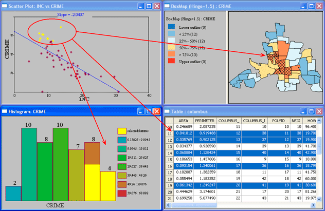

|
VTDP: Cross View Brushing
It is often useful to display the same data in two or more views on a screen at the same time. The cognitive problem this presents is how to understand how the interactions between views. An interactive method called brushing is very often the most effective solution. Brushing is the name given to the technique whereby a subset of the data selected in one view is highlighted and simultaneously highlighted in one of more additional views [1].
Example: The locations of set of retail outlets are shown on a map view. A scatter plot shows revenues are shown plotted against operating costs with a symbol for each outlet. The analyst wishen to answer questions about where the most profitable stores are located. Brushing provides a simple solution.
An overview of the brushing
process
Display Environment: Data entities are represented in at least two different ways on different parts of the screen or on multiple screens.
- Construct a visual query requiring information about a particular subset of the underlying data.
- Select symbols representing the relevant subset of the data. As a result the computer highlights all other representations of the data that has been selected.
- Execute visual queries for task relevant patterns in the highlighted representations. The queries may require information from two or more representations and be limited by visual working memory capacity.
|
Brushing enables the display of more attributes of a data set than would be otherwise possible. It also enables that different attributes can be portrayed using the most appropriate representation. Network views, temporal views, geospatial views and chart views can all be effectively integrated.
The reason why brushing is cognitively efficient is that it enabled rapid comparisions of patterns in the different by means of eye movements. To be effective this requires the the use of effective higlighting methods. In this image below, data is respresented in four ways, a map, a scatter plot and a table and a bar chart. All of them have different color schemes and each of the views presents its own highlighting challenge.

Image courtesy of Dr, Michael de Smith (http://www.spatialanalysisonline.com)
Ideally, the highighting method used from brusing should be more salient than any other visual coding used in the various data representations. Because brushing is analyst initiated it can be guaranteed that the entities highlighted will be of relevant to the cognitive task at hand.
Visual Query Support : Use strongh highlighting methods for brushing. Possibilities include reducing the visual contrast of non brushed objects while increasing the vividness and luminance contrast of brushed entities. Another possibility is to use motion [2] or blinking to draw attention to the brushed entities. In many displays motion and blinking are not used because they are considered too salient, but in the case of brushing the use of these methods can be justified. Motion and blinking are especially useful where there are limited options for color highlighting becease complex color schemes are already in use.
References
- Becker, R. A., & Cleveland, W. S. (1987). Brushing scatterplots. Technometrics, 29(2), 127-142.
- Bartram, L., & Ware, C. (2002). Filtering and brushing with motion. Information Visualization, 1(1), 66-79.
|